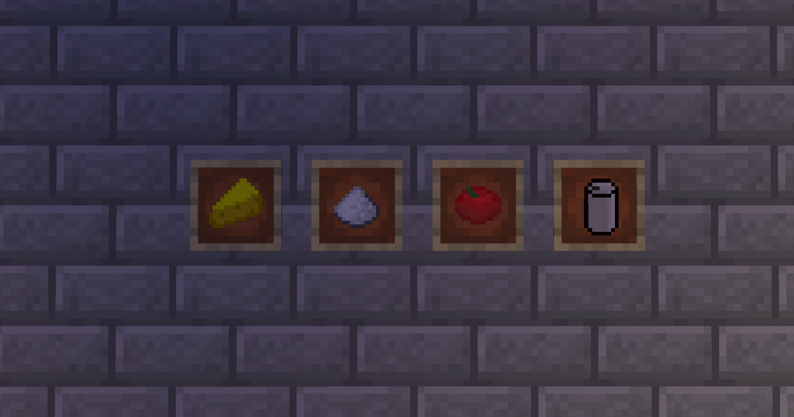

Food
Food! Make eating a bit more interesting in Minecraft.
Fruits!
This fruit and all other fruits have the same drop rate as Apples do to Oak Trees.
Bananas - Acacia Trees
Blueberries - Spruce Trees
Cherry - Dark Oak Trees
Lemon - Birch Trees
Grapes - Mangrove Trees
Misc Snacks!
Things that aren't very themed but very yummy.
- Bacon - Smelt cooked porkchop again for 2 bacon.
- Pretzel - 1 Bread and 1 Salt in a crafting table. (Read about salt below))
- Edible dirt - Mix 1 Salt and 1 Dirt in a crafting recipe, a hardy food for real "Greasy" men.
- Ice Cream! - Put 1 Snow, 1 Bowl, and 1 Milk Bucket in a crafting table.
- Banana Bread - 1 Banana, 1 Bread. Pretty Self Explanitory
Ingredients!
Many things in this update require some new ingredients, read about them here.
- Cheese - Re heat a milk bucket in a furnace, pretty funny I know
- Salt - Small chance of dropping from diorite
- Tomato - Small chance of dropping from grass
- Lettuce(Not pictured) - Small chance of dropping from grass
- Soda Can (Not a food but whatever) - 1 Iron ingot in a crafting table
Appliances!
If we're gonna be cooking, might as well get some new appliances!
Oven
Functions the same as a smoker but looks a bit more modern! Craft like so:
Blender
Used for making custom OnyxPack drinks, craft like so:
Drinks!
Speaking of the blender, how about some drinks!
Banana Milkshake
Wine
Cherry Soda
Kalamari
I'm gettin tired so let me cut it short. Squids drop Kalamari now, it's a brand new meat.
Meals
More substancial yet harder to make foods.
- Sandwich - Bread, Cheese, Porkchop, and Lettuce
- Burger - Bread, Cheese, Steak, and Lettuce
- BLT- Bread, Bacon, Lettuce, Tomato
- Sushi - Dried Kelp and Raw Salmon
- Salad - Lettuce, Tomato, and a Bowl
- Chicken Soup(Not pictued) - Chicken and a Bowl